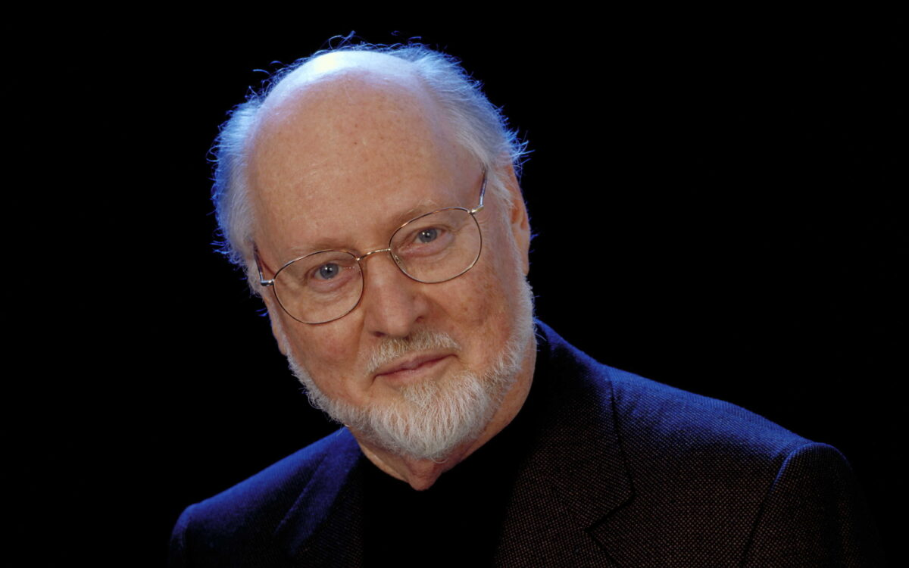

John Williams
Born: 08 February 1932
Age:
Years Active: 1952–present
Genre/s: Neo-romanticism, Modernism & Avant-Garde, Jazz, Americana, Impressionism
Label/s: Sony Classical, Deutsche Grammophon, Walt Disney
John Towner Williams (born February 8, 1932) is an American composer and conductor. Over his seven-decade career, he has composed many of the best known scores in film history. His compositional style blends romanticism, impressionism, and atonal music with complex orchestration. Best known for his collaborations with George Lucas and Steven Spielberg, he has received numerous accolades, including 27 Grammy Awards, five Academy Awards, seven BAFTA Awards, three Emmy Awards, and four Golden Globe Awards. With a total of 54 Academy Award nominations, he is the second-most nominated person in the award's history, after Walt Disney. He is also the oldest Academy Award nominee in any category, receiving a nomination at 91 years old.
Williams's early work as a film composer includes None but the Brave (1965), Valley of the Dolls (1967), Goodbye, Mr. Chips (1969), Images, The Cowboys (both 1972), The Long Goodbye (1973) and The Towering Inferno (1974). He has collaborated with Spielberg since The Sugarland Express (1974), composing music for all but five of his feature films. He received five Academy Awards for Best Score/Best Score Adaptation for Fiddler on the Roof (1971; score adaptation of the original music by Jerry Bock), Jaws (1975), Star Wars (1977), E.T. the Extra-Terrestrial (1982) and Schindler's List (1993). Other memorable collaborations with Spielberg include Close Encounters of the Third Kind (1977), the Indiana Jones franchise (1981–2023), Hook (1991), Jurassic Park (1993) and its sequel The Lost World: Jurassic Park (1997), Saving Private Ryan (1998), Catch Me If You Can (2002), War Horse (2011), Lincoln (2012), and The Fabelmans (2022). He also scored Superman (1978) and two of its sequels, the first two Home Alone films (1990–1992), and the first three Harry Potter films (2001–2004).
Outside of his long-term collaborations with Spielberg and Lucas, Williams has composed the scores for films directed by William Wyler, Clint Eastwood, Alfred Hitchcock, Brian De Palma, John Badham, George Miller, Oliver Stone, Chris Columbus, Ron Howard, Barry Levinson, John Singleton, Alan Parker, Alfonso Cuarón, and Rob Marshall. He has also composed numerous classical concertos and other works for orchestral ensembles and solo instruments. He served as the Boston Pops' principal conductor from 1980 to 1993 and is its laureate conductor. Other works by Williams include theme music for the 1984 Summer Olympic Games; NBC Sunday Night Football; "The Mission" theme (used by NBC News and Seven News in Australia); PBS's Great Performances and the television series Lost in Space, Land of the Giants and Amazing Stories.
Williams received the Kennedy Center Honor in 2004, the National Medal of the Arts in 2009, and the AFI Life Achievement Award in 2016. He was inducted into the Songwriters Hall of Fame in 1998, the Hollywood Bowl's Hall of Fame in 2000 and the American Classical Music Hall of Fame in 2004. He has composed the scores for nine of the top 25 highest-grossing films at the U.S. box office. In 2022, Williams was awarded an honorary knighthood by Queen Elizabeth II, "for services to film music". In 2005, the American Film Institute placed Williams' score to Star Wars first on its list AFI's 100 Years of Film Scores; his scores for Jaws and E.T. the Extra-Terrestrial also made the list. The Library of Congress entered the Star Wars soundtrack into the National Recording Registry for being "culturally, historically, or aesthetically significant".